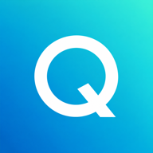

Qingping Brand
青萍品牌规范与素材
Logo
使用 Qingping 原始字标，保持字形、比例和配色。
PNG · 1254 × 1254 px · 含渐变背景，无透明通道
下载 Logo PNG ↓品牌色
青萍青
- HEX
#1FB6AE- RGB
31, 182, 174
品牌标准色以 #1FB6AE 为准。现有 Logo 和 favicon 保留原有青蓝渐变；渐变中的取样色不作为品牌标准色。印刷色值待确认。
Favicon
使用白色单字母 Q 与青蓝渐变背景，根据场景选择对应尺寸。

| 文件 | 尺寸 | 用途 | 下载 |
|---|---|---|---|
| favicon.ico | 16 / 32 / 48 px | 浏览器图标 | 下载 |
| favicon-16x16.png | 16 × 16 px | 浏览器标签 | 下载 |
| favicon-32x32.png | 32 × 32 px | 浏览器标签 | 下载 |
| favicon-48x48.png | 48 × 48 px | 浏览器图标 | 下载 |
| apple-touch-icon.png | 180 × 180 px | Apple 主屏幕图标 | 下载 |
| favicon-192x192.png | 192 × 192 px | 网站应用图标 | 下载 |
| favicon-512x512.png | 512 × 512 px | 网站应用图标 | 下载 |


网站引用方式
将图标文件放到网站根目录，在 HTML 的 <head> 中加入：
<link rel="icon" href="/favicon.ico" sizes="16x16 32x32 48x48">
<link rel="icon" type="image/png" sizes="32x32" href="/favicon-32x32.png">
<link rel="apple-touch-icon" sizes="180x180" href="/apple-touch-icon.png">使用说明
以下为使用建议，供品牌规范审阅。
- 等比缩放，不拉伸、旋转或重新排字。
- 现有 Logo 图片包含背景和留白，使用时保留完整画面。
- 保留素材原色，不添加滤镜、阴影或描边。
- 小尺寸场景使用对应 favicon 文件，避免放大低分辨率图片。
待补充：矢量 Logo、透明底与单色版本、印刷色值、安全留白及最小使用尺寸。